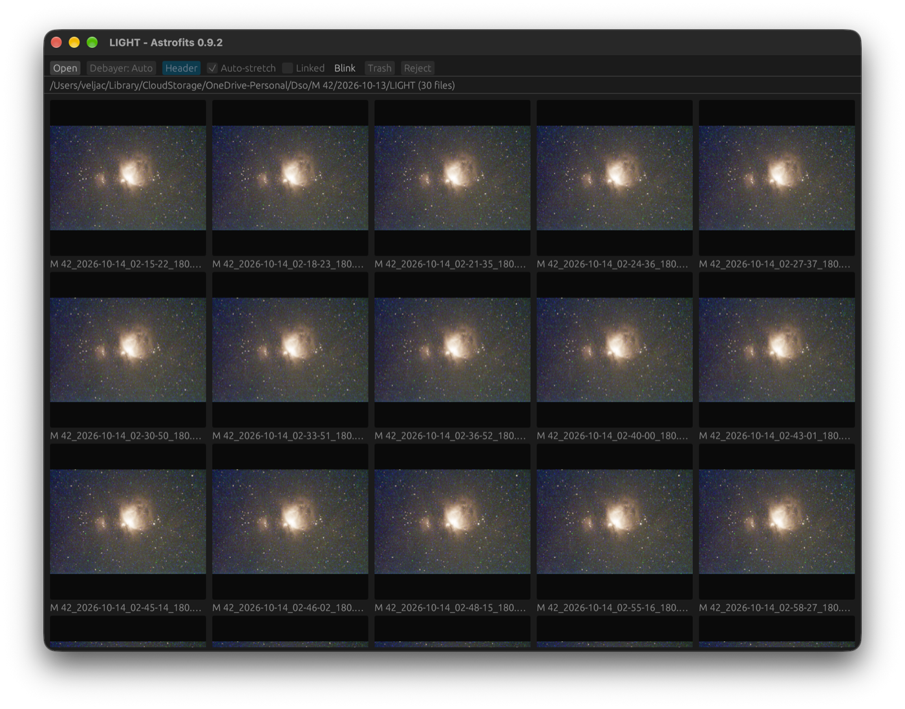
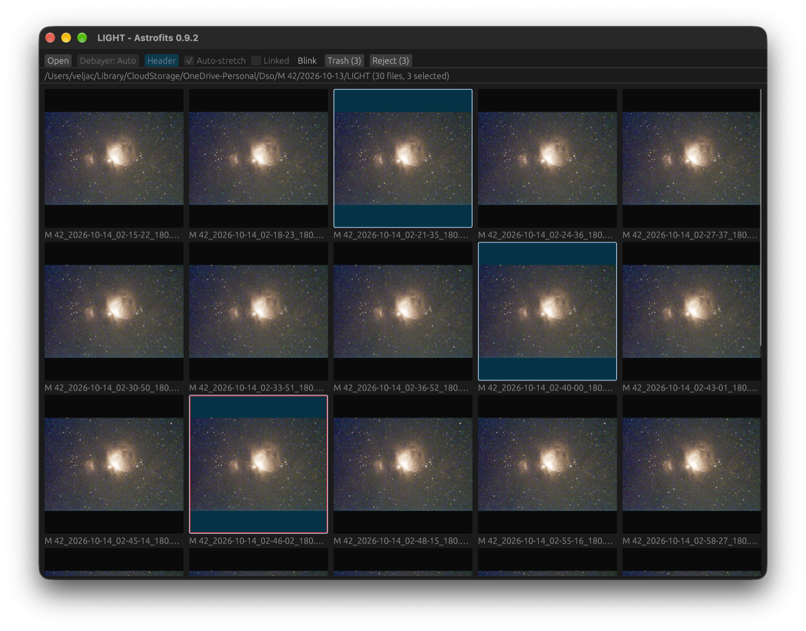
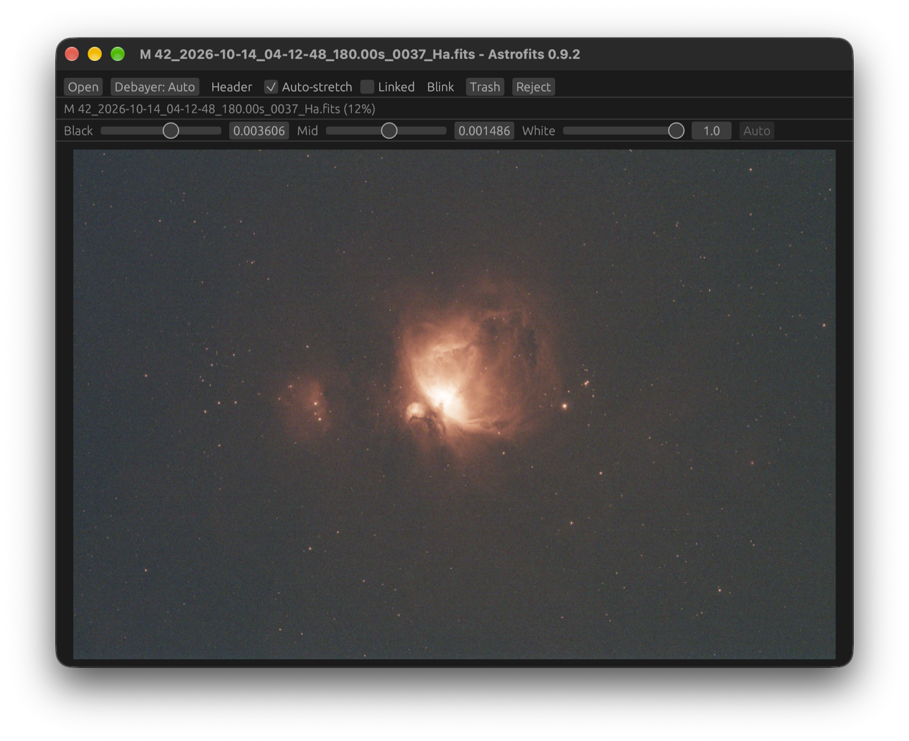
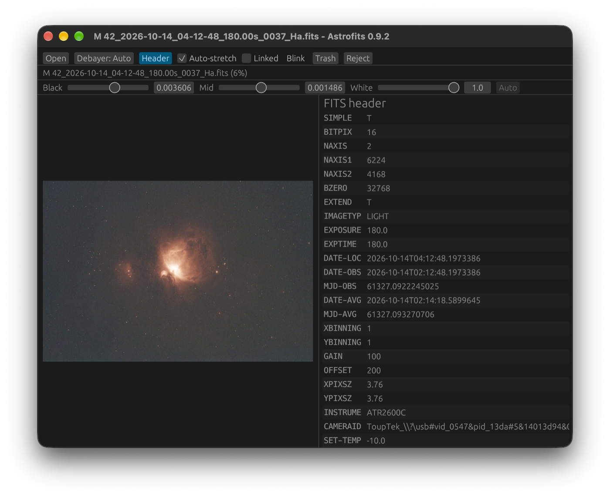
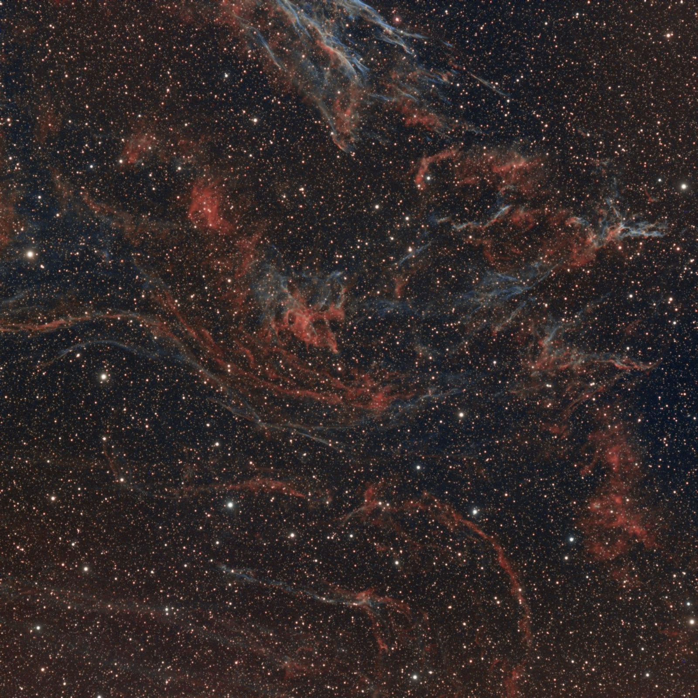
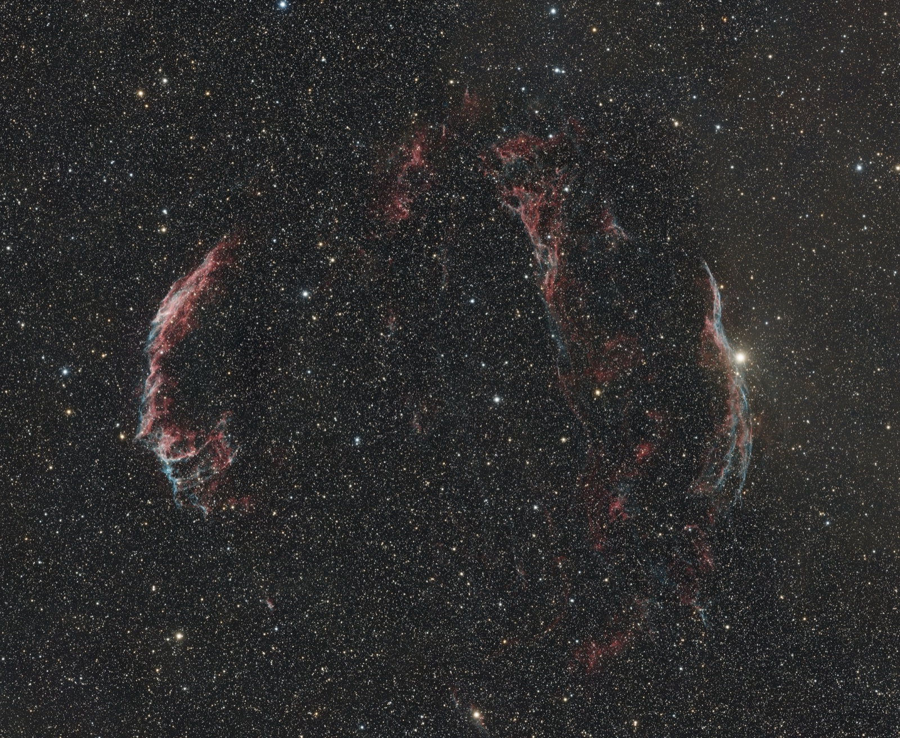
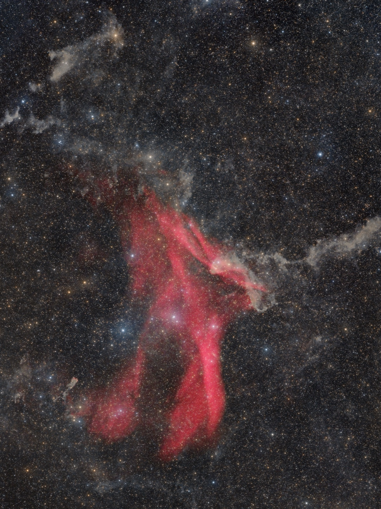
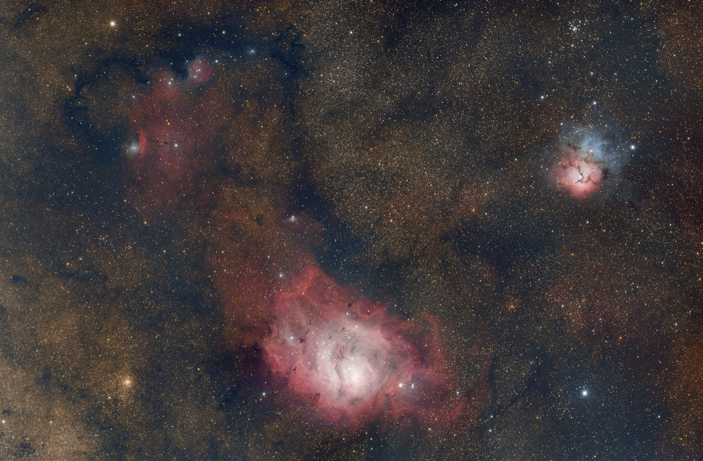
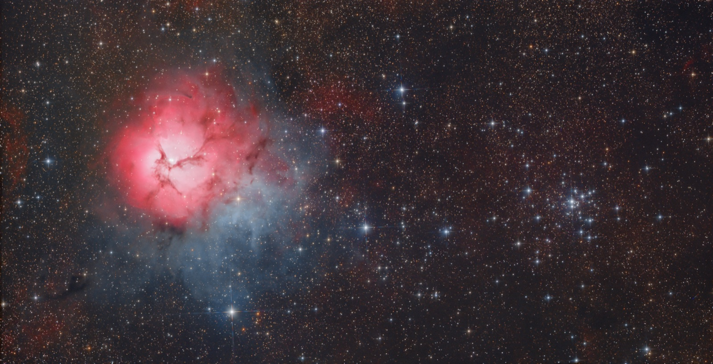

Astrofits
A fast viewer for FITS astrophotography frames. Open a frame or a whole folder, see it stretched the way PixInsight would, and cull the bad ones.
Windowszip with installer
macOSuniversal .dmg (Apple silicon and Intel)
Linux.deb for Debian and Ubuntu
All versions are on the releases page. Builds are not signed or notarized: on macOS use right-click, Open on first launch.
What it does
- Mono and one-shot-colour frames, with debayering for every Bayer pattern.
- Auto-stretch that matches PixInsight, linked or per channel.
- Open a folder and get a mosaic of every frame; the view follows the folder as files come and go.
- Blink through frames, each with its own stretch, and mark frames to move or delete.
- 1:1, fit to window, FITS header view, keyboard-driven with a controls-free mode.
- Windows, Linux and macOS, with "View with Astrofits" in the file manager.
Screenshots




About me
I photograph the night sky and wrote Astrofits because I wanted to check a night's frames quickly, on any computer, without opening a heavy tool. More of my images are on AstroBin.




